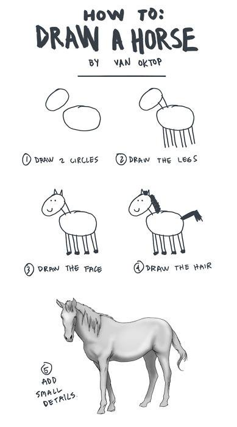

Theory
- Kafka Basics
- Low Level Producer / Consumer
- Avro
- Streams
- Connect
Hands-On Exercise
Hands-On Agenda
- Low Level Producer / Consumer
- Kafka Streams
Kafka Basics (1)
Apache Kafka is a distributed streaming platform.
Streaming Platform
- Publish and Subscribe to streams of records
- Store Streams of Records (durable, fault tolerant)
- Process Streams of Records as they occur
Kafka Basics (2)
- Record = Key, Value, Timestamp
- Streams of Records are stored in Topics
- Kafka runs as a cluster of 1+ servers
Attaching to Kafka

- Producers: Generate Events
- Consumers: Read Events
- Connectors: Attach External Systems
- Streams: Use high level operations on events
Topics and Logs


Distribution
- Each Topic can be partitioned
- Partitioning = parallelism
- Each Partition: 1 leader and 0+ followers
- Leader: Handles the write + reads
- Followers: passively replicate the leader
- If the leader fails, one of the followers become the new leader
- Each Server in a cluster is leader + follower for some partitions
Brokers
Handles Storage, Fail-Over,
but knows nothing about producers or consumers!
Producers
- Publish Record to Topic
- Producer decides which partition
Consumers + Consumer Groups
- Reads Records
- Consumer is part of a consumer-group
- Consumer in a group: consumer of 1-n partitions
- Each Consumer Group => each message once
Consumer Groups

Guarantees
- Messages sent by 1 producer to 1 topic are appended in send order
- Consumers receive messages in the order (per partition)
- Topic with replication factor N: N-1 server failures allowed
- Exactly Once Delivery possible, at least once always guaranteed
Use Cases
- Messaging
- Log Aggregation (Metrics, Website Activity, ...)
- Stream Processing
- Event Sourcing
- Commit Logs
Avro
Functionality
- Structured Data Format
- Schema based
- Compact and fast binary data format
- Code can be generated (but no must)
Schemas
- Avro Data always stored together with schema
- Avro Schema is defined in JSON
- Resolve mechanism between different versions of schemas
- Based on Field Names, not IDs
Supported Types
Primitive:
- null
- boolean
- int
- long
- float
- double
- bytes
- string
Complex:
- records
- enums
- arrays
- maps
- unions
- fixed
Comptability of schemas
| Type | Changes allowed | Upgrade First |
|---|---|---|
| Backward |
|
Consumers |
| Forward |
|
Producers |
| Full |
|
Any order |
| None |
|
Depends |
Hands-On: Getting everything ready
https://github.com/titaniumcoder/kafka-introduction
- Java
- Gradle
- IDE
Application Idea
We build a distributed, event-based Signing Software.
Events
ch.srgssr.pdp.kafka.training.events
Topic TrainingSystemState
- Info(Id, UUID, Description, Algorithms)
Topic TrainingMessage
Signature(uuid, id?, algorithm?, content, signature?, key?, event)
- SIGN
- SIGNED
- VERIFY
- VERIFIED
- VERIFICATION_FAILED
API (1)
GET /algorithms
List all registered algorithms in the system (from Info)GET /systems
List all registered systems (Ids from Info)POST /sign?algorithm Body: content
sign the requestPOST /verify?algorithm&key Body: Content, Signature
verify the signature
API (2)
GET /stats
Statistics:- Number of algorithm
- Most used algorithm in last hour, 24 hours, 10 minutes
- Percentage of failed verifications
- Ranking of failing algorithms and ids
First exercise
Just make sure the application compiles and can be started.
Producer
Characteristics
- Send directly to the leader of the correct partition
- Leader can be found via metadata request (but Java Client handles this)
- Correct Partition: Definition of Producer, Default Hash Of Key
- Asynchronous Send: Kafka Producer tries to batch multiple messages
Important Configs
key.serializer / value.serializer: How to serialize recordsacks: Number of acknowledges before request is complete: 0, 1, allretries: how many times to retry on failurebatch.size: in bytes!client.id: for logging onlymax.in.flight.requests.per.connection: maximum number of unacknowledged requestsenable.idempotence: allow exactly once
Consumer
Characteristics
- Send Fetch Request to the leader
- Sends Wanted Offset! (Broker knows nothing about that)
- Receives a bunch of records
- Java Client helps, but the definition of "Done" is a client job
Important Configs (1)
key.serializer / value.serializer: How to serialize recordsgroup.id: Consumer Group Nameauto.offset.reset: Where to start with a new consumer group: earliest, latest, nonefetch.max.bytes: how much data to fetchmax.poll.records: how many records to fetchmax.poll.interval.ms: max delay between polls
Important Configs (2)
enable.auto.commit: whether the client should auto-commit the offsetauto.commit.interval.ms: how often to auto-commitclient.id: for logging purposes
Hands-On
Handle all missing methods in the low-level service
- Register / Leave
- Encryption / Decryption
Streams
Functionality
Kafka Streams is a client library for processing and analyzing data stored in Kafka.
- Lightweight Client Library
- No External Dependencies
- Fault-Tolerant Local State
- Supports Exactly-Once Processing
- One-Record at a time processing
- Event-Time Based Windowing Operations
Stream
- Unbounded, Continuously Updating Data Set
- Ordered
- Replayable
- Fault-Tolerant
- Immutable Data Records
Processor Topology

Stream Processing Application
- Any program using the Kafka Streams Library
- One or more Processor Topologies
Time
- Event Time
- Processing Time
- Ingestion Time
Aggregation
Takes one or more input streams / tables and combines them into one output record.
Windowing
- Group Records that have the same key for stateful operations (aggregations, joins, ...)
- Retention Period: How long to wait for out-of-order / late-arriving data records
State
Kafka Streams provides state stores, which can be used by the application to store and query data.
Out-of-Order Handling
- Stream-Stream Joins
- Out-of-Order Records handled, but result with possible unnecessary records
- Stream-Table Joins
- Out-of-Order Records not handled, unpredictable results
- Table-Table Joins
- Out-of-Order Records not handled, eventually consistent (changelog stream)
Sample Architecture

Streams DSL
- KStream: Record Stream -- insert only
- KTable: Changelog Stream -- upsert
- GlobalKTable: Changelog Stream -- but over all instances
Stateless Operations
- Branch: Split a stream according to some criteria
- Filter / Inverse Filter: Evaluate Boolean Function
- FlatMap: 1 Record → 0 to N Records
- GroupByKey: KStream → KGroupedStream
- GroupBy: Group by new key
- Map: Just calculate new Key,Value Pair
- SelectKey: Calculate new key for records
- Merge: Merge together to streams of the same type
- Peek (execute side-effect operation on each record)
Stateless Terminal Operations
- Foreach: Ends processing
- Print: Prints to System Out
Stateful Operations

Hands-On: Statistics
- How many Encryption Requests
- How many Requests were answered (no of responders)
- How many Decryption Requests
- How many Decryptions were answered
- Who did most encryptions / decryptions
- How many failed decryptions
- Who is "badest" decrypter
- ???
Connect
Core Conepts
- Connectors: SourceConnectors (In)/ SinkConnectors (Out)
Describe the data to be copied and generate tasks to do the copying - Task: SourceTask / SinkTask
Copy Data from or to Kafka - DynamicConnector: A Connector is responsible for monitoring the external system for change and must reconfigure itself accordingly
Task Architecture

Converters